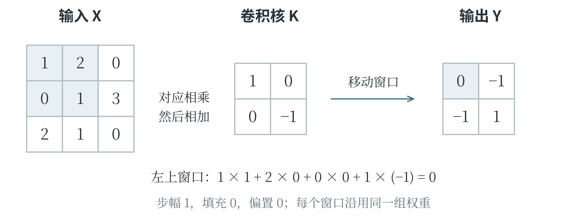
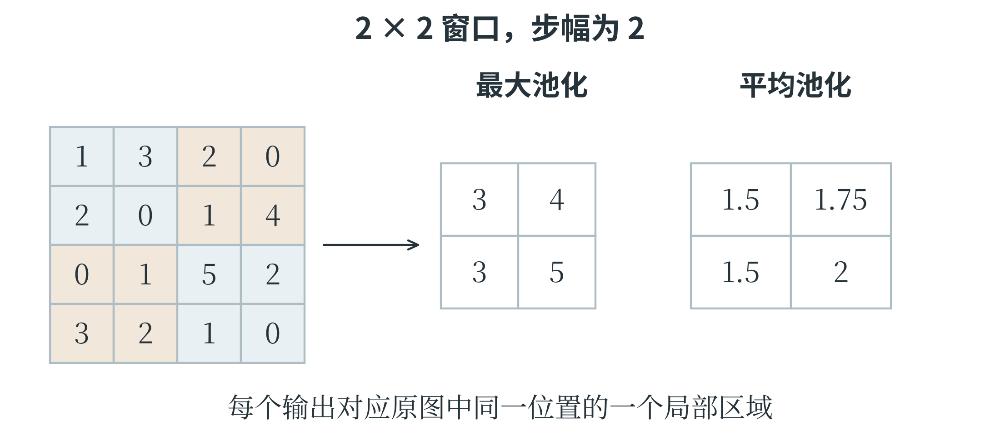
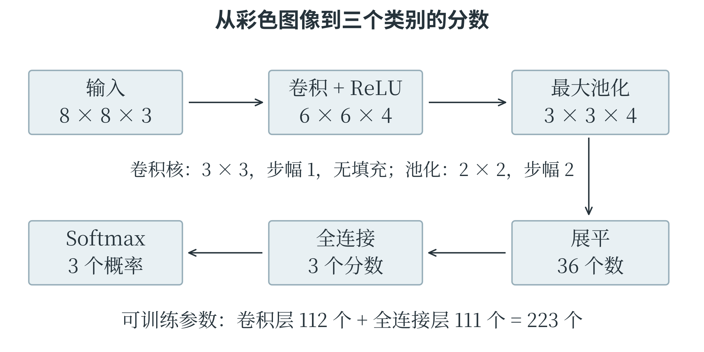

6.8 卷积神经网络
图像中的相邻位置有意义
一张灰度图可以写成像素矩阵，彩色图通常还有多个颜色通道。如果把全部像素直接拉成一长列送入全连接层，模型虽然能计算，却没有直接利用附近像素共同形成边缘、纹理的结构。卷积神经网络，简称 CNN，使用小窗口在图像上移动，对不同位置重复进行局部运算，逐步提取图像特征。窗口中的一组权重称为卷积核或滤波器。对一个位置，把窗口覆盖的像素与卷积核对应相乘后相加，再加上偏置，就得到输出中的一个数。窗口移动到其他位置，继续使用同一组权重，得到一张特征图。某个卷积核如果对一类边缘产生较强响应，该边缘出现在图像其他位置时，也有机会被同一组权重检测到，这叫权重共享。
逐格计算一个卷积窗口
设输入灰度图与卷积核分别为下面两个矩阵，偏置为零，窗口每次移动一格，不在边缘补数：
左上窗口覆盖 \(\begin{bmatrix}1&2\\0&1\end{bmatrix}\)，计算结果为 \(1\times1+2\times0+0\times0+1\times(-1)=0\)。向右移动一格，窗口变为 \(\begin{bmatrix}2&0\\1&3\end{bmatrix}\)，结果为 \(2-3=-1\)。下方两个窗口同样计算，分别得到 \(-1\) 和 1，因此输出为：

这里使用的是深度学习库中通常称为“卷积”的运算约定：卷积核不翻转，严格数学名称是互相关。数学教材中的卷积常会先翻转卷积核，因此遇到题目时应按给定规则计算。这个区别不影响理解局部连接和权重共享，却可能改变具体数字结果。
步幅表示窗口每次移动多少格，步幅为 2 就每次跨两格。填充表示在输入边缘补上数值，常见的是补零，它可以控制输出尺寸，也让边缘像素参与更多窗口计算。对一个方向，输入长度为 \(n\)，卷积核长度为 \(k\)，两侧各填充 \(p\)，步幅为 \(s\)，当卷积核连续覆盖相邻格子，且有效输入至少能放下一个窗口时，输出长度为：
向下取整符号表示舍去不足一个完整步幅的部分。本例 \(n=3\)、\(k=2\)、\(p=0\)、\(s=1\)，每个方向输出长度为 2。若输入为 \(5\times5\)、核为 \(3\times3\)、步幅 1、四边各补一格，输出仍为 \(5\times5\)。先确定有效窗口能放在什么位置，再计算个数，也能检查公式是否用对。
通道、池化与完整网络
彩色图的每个位置可能包含红、绿、蓝三个数。一个卷积核通常也要覆盖所有输入通道：分别对应相乘，跨通道相加，再加偏置，得到一个输出通道。使用多个不同的卷积核，便产生多张特征图。例如，3 个输入通道、每个核的空间大小为 \(3\times3\)，一个核含 27 个权重；若另含一个偏置，就是 28 个参数。4 个这样的核共含 112 个参数，产生 4 个输出通道。卷积核的权重通常从训练数据中学习。教材中给一个固定核，是为了理解计算，不表示实际网络的每个边缘检测器都由人手工规定。经过卷积后常接 ReLU 等激活函数，保留非线性。较浅层可能形成边缘和纹理特征，后面的层把局部信息组合成更复杂的模式，但不能把每一张特征图都机械地解释成某个固定物体部件。
池化层在小范围内汇总数值，常用于降低特征图的空间尺寸。最大池化取窗口中的最大值，平均池化取平均值。例如，窗口 \(\begin{bmatrix}1&3\\2&0\end{bmatrix}\) 的最大池化结果为 3，平均池化结果为 1.5。普通最大池化、平均池化本身没有像卷积核那样需要训练的权重。汇总降低了后续计算量，也会丢失部分位置细节，因此并非任何任务都适合大量池化。
一个简单图像分类网络可以依次执行卷积、激活、池化，再将特征交给全连接层输出类别分数。把多维特征排列成一条向量，称为展平。展平改变的是组织形状，不会重新学习一组特征。若池化后有 4 张 \(2\times2\) 特征图，展平后就是 16 个数，随后一个含 3 个输出单元的全连接层接收这 16 个输入。
预测时，图像依次经过这些层；训练时，损失通过反向传播影响前面各层的权重。CNN 利用局部结构提高图像处理的效率，但仍受训练材料、目标与架构限制。某种位置变化、遮挡或光照变化是否能够处理，需要通过数据和评价说明，不能仅凭“使用了卷积”就推断模型已经具备所有视觉能力。
把池化窗口完整移动一次
只计算一个窗口，还看不清池化怎样改变整张特征图。设输入为下面的 \(4\times4\) 矩阵，使用 \(2\times2\) 窗口，横、纵步幅都为 2，不填充边缘。窗口恰好覆盖左上、右上、左下、右下四块，不发生重叠。
四块的最大值依次为 3、4、3、5，因此最大池化得到 \(\begin{bmatrix}3&4\\3&5\end{bmatrix}\)。若改用平均池化，四块总和分别为 6、7、6、8，每块除以 4，得到 \(\begin{bmatrix}1.5&1.75\\1.5&2\end{bmatrix}\)。图 6-18 用颜色框出对应区域，输入里的四个数共同决定输出里的一个数。

feature = [[1, 3, 2, 0], [2, 0, 1, 4],
[0, 1, 5, 2], [3, 2, 1, 0]]
pooled = []
for row in range(0, 4, 2):
output_row = []
for col in range(0, 4, 2):
window = [feature[row][col],
feature[row][col + 1],
feature[row + 1][col],
feature[row + 1][col + 1]]
output_row.append(max(window))
pooled.append(output_row)
print(pooled) # [[3, 4], [3, 5]]
第二章中的二维列表和嵌套循环，在这里直接表达了图像操作。外层循环确定窗口所在行，内层循环确定窗口所在列，汇总后的位置则对应输出的行列。卷积同样要确定窗口位置，但还包含各位置乘权重、再求和的步骤，不能把它与取最大值混用。
沿着整个网络检查尺寸和参数
考虑一个小型分类网络，输入是 \(8\times8\) 的彩色图像，共三个颜色通道。第一层采用 4 个 \(3\times3\) 卷积核，步幅为 1，不填充；每个方向可以放下 \(8-3+1=6\) 个窗口，因此得到 4 张 \(6\times6\) 特征图。随后经过 ReLU，形状不变；再用 \(2\times2\)、步幅为 2 的最大池化，每张特征图变为 \(3\times3\)。

池化后共有 \(3\times3\times4=36\) 个数，展平为 36 维向量。一个有 3 个输出单元的全连接层，为每个输出准备 36 个权重和 1 个偏置，因此有 \((36+1)\times3=111\) 个参数。前面的卷积层参数为 \((3\times3\times3+1)\times4=112\) 个；ReLU、普通池化和展平没有需要训练的参数，这个网络两层权重与偏置合计 223 个。
表 6-6 小型卷积网络的形状与参数
| 处理步骤 | 输出形状或数量 | 可训练参数数 |
|---|---|---|
| 输入图像 | 8×8×3 | 0 |
| 卷积 | 6×6×4 | 112 |
| ReLU | 6×6×4 | 0 |
| 最大池化 | 3×3×4 | 0 |
| 展平 | 36 个数 | 0 |
| 全连接 | 3 个分数 | 111 |
| Softmax | 3 个概率估计 | 0 |
卷积层输出共有 \(6\times6\times4=144\) 个数，参数却只有 112 个，因为同一卷积核在不同位置共享权重。若让这 144 个输出都独立连接全部 \(8\times8\times3=192\) 个输入，并各自带一个偏置，就需要 \((192+1)\times144=27792\) 个参数。局部连接与权重共享利用了图像位置结构，使参数组织方式明显不同；这并不意味着参数较少的模型在任何任务上都更好，而是说明 CNN 的结构为何适合许多图像处理问题。
网络输出三个分数以后，还需根据任务决定怎样使用。若三个类别互斥，Softmax 可以把分数变成总和为 1 的概率估计，再选择最大的一项作为类别；训练时，真实标签与这三个输出共同决定损失。